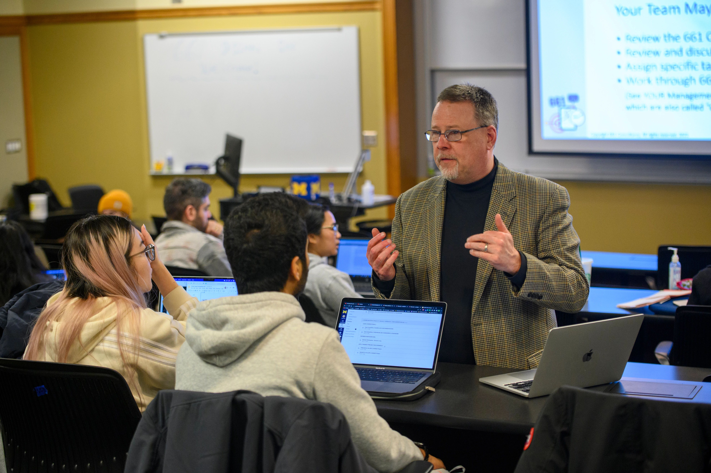

At the University of Michigan School of Information (UMSI), we are committed to supporting our students' academic success by offering a wide array of resources and services. Our academic advising team provides personalized guidance to help you navigate your curriculum, select courses, and address any academic challenges or questions you may encounter during your studies. UMSI students also have access to the extensive collections and study spaces within the University Library system, offering both digital and physical resources essential for research and coursework. Additionally, our specialized tutoring services and the UMSI Writing Center are available to support you in mastering complex subjects and enhancing your written communication skills. By utilizing these academic resources, UMSI students can thrive in their studies and achieve their educational goals.
News and Updates
Meet the Advisors
Our team of experienced academic advisors is dedicated to helping you achieve your goals. Get to know our advisors and learn how they can support your academic and professional development.
MSI Academic Advisor she/her/hers
Appointments
Scheduling an appointment with an academic advisor is easy. Whether you prefer in-person meetings or virtual consultations, we're here to accommodate your needs. Click here to book your appointment today.
- Scheduled 1:1 Appointments
- Drop-In 1:1 Appointments
- You can reach us via email at umsi.advising.msi@umich.edu
Advising Business Hours - Monday through Friday from 9:00 to 5:00 PM (ET)

Advising Resources
UMSI offers a wide range of resources to support your academic success. From course planning tools to career development workshops, you'll find everything you need to thrive as a student.
Student Testimonials
"The advising team at UMSI has been incredibly supportive throughout my studies. Their guidance helped me choose the right courses and plan my career path."
Contact Us
Have questions? Reach out to us at umsi.advising.msi@umich.edu or visit our office in the North Quad building.